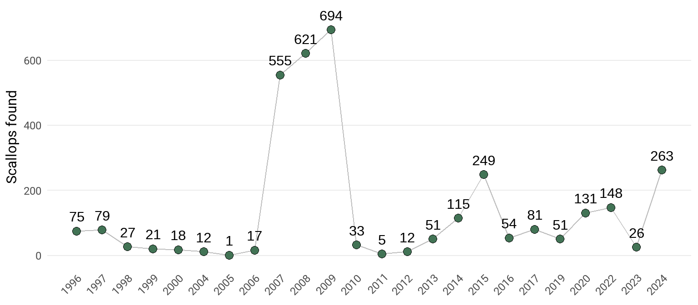

FW-3
Achieve a sustainable bay scallop population
OBJECTIVES:
Achieve a stable, sustainable population of bay scallops in Tampa Bay.
STATUS:
Ongoing. Goal revised to reflect the need to achieve sustainable scallop population rather than population sufficient for recreational harvest. Action also revised to identify additional living resource indicators of seagrass health. Action continues support for collaborative research and scallop restoration and support for citizen monitoring through the Great bay Scallop Search.
BACKGROUND:
Scallops are a key indicator of the bay’s health because of their reliance on clear waters and robust seagrasses. Collection and consumption of scallops is a cherished and popular summer pastime enjoyed by thousands of Floridians each year in nearshore waters north of Anclote Key Lighthouse in Pasco County to the Big Bend area where recreational scallop harvests are permitted.

The goal of restoring scallops to sufficient numbers to support a recreational harvest in Tampa Bay remains as elusive as the secretive bivalves themselves. Despite dramatically improved water quality, expanding seagrasses and nearly two decades of research and recovery efforts, scallops in Tampa Bay have not yet returned to healthy, sustainable levels.
Scallops disappeared from Tampa Bay in the 1960s, a likely casualty of both declining water quality and overfishing. Efforts to restore scallop populations began in the mid-1990s, including work to rear them in hatcheries and release them in protected cages to spawn in the bay. As of 2023, recreational harvests remain closed.
In 1996, TBEP and Tampa Bay Watch partnered to create the Great Bay Scallop Search, a one-day event that enlists volunteers to snorkel grass beds in the lower bay looking for scallops. In 2023, the Scallop Search was expanded to Middle Tampa Bay up to Weedon Island. In the early 2000s, the number of scallops dropped into the teens. In 2007, Scallop Search volunteers tallied 555 scallops during the event, followed by 624 in 2008 and a record 674 in 2009. These positive tallies fueled continued research and monitoring efforts. However, in subsequent years, counts dropped again. TBEP’s Scallop Search Dashboard tracks the counts.
Bay scallops are extremely sensitive to changes in water clarity, salinity, temperature and red tide. Their limited life span of only 12-18 months complicates efforts to revive populations in the bay. Additionally, only one egg out of the 12 million or so produced by a single adult scallop may survive. Moreover, new research indicates that the success of scallop recruitment here may depend upon successful dispersal of larvae from important “source sites” in the Big Bend area of Florida, where scallops are most abundant, but harvest pressure is intense. Ocean acidification associated with climate change also may affect the future health of bay scallops and other mollusks by impairing their ability to form hard, calcified shells.
Scientists continue to survey scallop populations in Tampa Bay as part of a coordinated monitoring effort throughout Southwest Florida and to investigate innovative ways to improve spawning success and larval survival. A new restoration approach that encompasses all life-stages is being applied by scientists from Mote Marine Laboratory, the Sarasota Bay Estuary Program, Florida Fish and Wildlife Conservation Commission and volunteers with Sarasota Bay Watch. The team is testing several techniques to boost scallop populations. One method deploys scallop collectors made from mesh produce bags that give larvae an inviting place to settle. On another, adult scallops housed together in protective cages are temporarily located in seagrass beds during their spawning period. In some trials, larvae are raised to the juvenile stage then released into seagrass beds. TBEP funded research by University of Florida found no relationship between the density of larval release on successful recruitment (Tuckett, Patterson, and Thomas 2021). Microsatellite DNA markers were identified for hatchery reared scallops that will inform effectiveness of future bay scallop restoration.
Tuckett, Q., J. Patterson, and S. Thomas. 2021. “Can Bay Scallop Recruitment Limitation in Tampa Bay Be Overcome Using a Targeted and Intensive Approach?” 15-21. St. Petersburg, Florida: Tampa Bay Estuary Program. https://drive.google.com/file/d/1OwZpkZUf0oNJ8pkW_Pvfgg8tnB9tUSYR/view?usp=sharing.

In the next decade, it is unlikely that scallop populations in Tampa Bay will rebound to levels sufficient to support a recreational harvest season. Therefore, this action proposes a revised goal of restoring scallop stocks to a self-sustaining level, with enough adults surviving to spawn each year to create a stable population so larval seeding efforts may one day no longer be necessary.